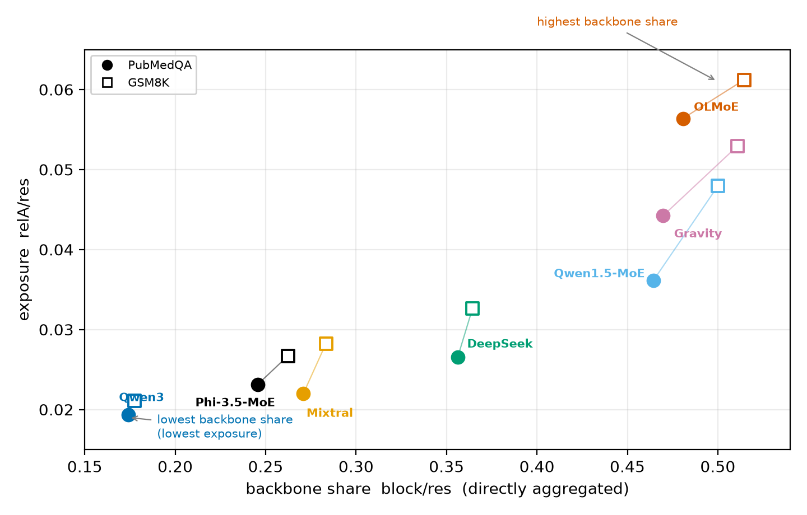
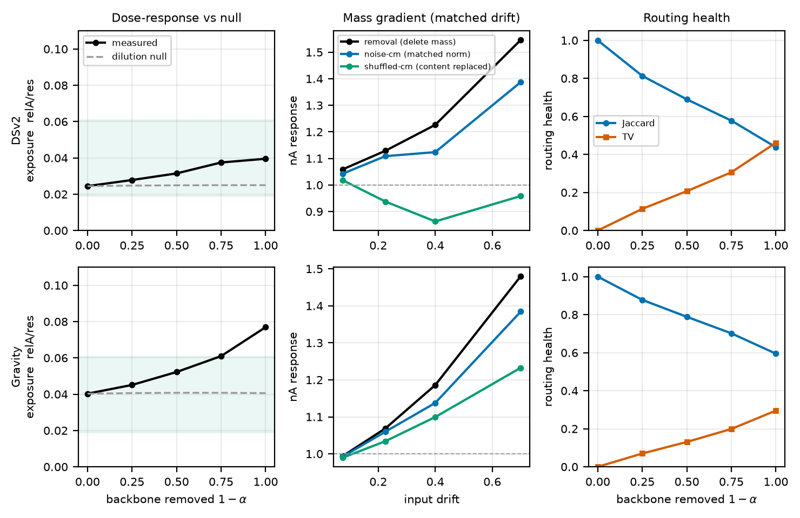

Lunit · arXiv:2608.15787, 2026
TL;DR. Two forward passes can share every MoE weight but route the same token through different experts. We split the difference into routing and content terms, then follow the routing term from block output to residual stream to behavior. Across seven checkpoints and two domains, residual exposure varies much more than raw routing magnitude and follows the routed block's share of the residual. Causal patches find a bounded effect that matched-norm noise largely reproduces. Router movement locates change but does not prove behavioral influence.
A demonstration-conditioned teacher and a query-only student use the same parameters, but context changes their hidden states and gates. The same token can therefore activate different experts. Gate overlap tells us that the route moved, not how much of the perturbation survives the rest of the network.
Same model weights, but a worked demonstration changes both hidden state and expert gates.
The comparison holds parameters fixed and replays matched token prefixes through both contexts.
The observed output difference combines changed gates and changed expert content.
An exact add-and-subtract decomposition separates the routed-output change. The first term changes gates while evaluating experts at the student's hidden state. The second holds teacher gates fixed while changing expert content. Without this split, every teacher-student block difference can be mistaken for a routing effect.
Switch between A and B to see what the decomposition holds fixed.
We measured seven open-weight MoE checkpoints on PubMedQA and GSM8K using 200 matched prompts per domain. The models span top-2-of-8 to top-8-of-128 routing, with and without shared experts, and several gate conventions. The normalized routing term stays in a fairly narrow range, while residual exposure varies twice as widely in multiplicative terms.

Qwen3-30B has one of the largest routing factors but the smallest residual exposure. OLMoE has a similar routing factor and the highest exposure. The difference is the routed block's contribution relative to the always-on residual backbone.
To test the mechanism, we scaled the always-on shared output in DeepSeek-V2-Lite and Gravity without changing the router. Reducing the backbone increased post-block exposure monotonically, from 0.0245 to 0.0395 in DeepSeek and from 0.0403 to 0.0769 in Gravity. A frozen-numerator dilution control stayed nearly flat.

The always-on path does more than enlarge the denominator. Preserved common-mode mass helps keep teacher and student routes coherent, reducing the mismatch before it propagates.
Decomposition and exposure do not prove a behavioral effect. In a preregistered three-model test, we patched the captured routing term into every MoE block and compared it with the natural context effect and matched-norm random directions.
The routing term has an effect, but much of it follows from perturbation magnitude. The content term's premium over a random direction is 5.6-80×, versus 1.54-2.05× for routing on the same checkpoints and domain. Changed conditioning affects output mainly through direction-specific content rather than router movement alone.
Verify that the A/B decomposition exactly reconstructs the routed-output difference for the checkpoint and execution path.
Quantify the routing term relative to the residual stream instead of inferring influence from overlap or total variation.
When a downstream decision matters, patch the recorded term or run another behavioral intervention. Exposure is a screen, not a threshold.
Use router divergence to locate change, residual exposure to quantify propagation, and behavioral intervention to establish consequence.
The seven checkpoints are an opportunistic, family-correlated sample rather than a factorial architecture sweep. Backbone rescaling covers two models, while behavioral patches cover three models and next-token effects rather than task-level generation. Scale probes and a merged-expert checkpoint show that the narrow block-level range is not universal. The claims concern one same-weight conditioning mismatch, not accumulated optimization, separate teachers, reinforcement-learning trajectories, or forgetting.
Interpretation boundary. Containment is not harmlessness. Exposure within the observed range is evidence about propagation in this regime, not a safety guarantee or a universal behavioral threshold.
@article{caruzzo2026routing,
title={Routing Divergence Is Not Evidence of Behavioral Influence in Same-Weight MoE Self-Distillation},
author={Caruzzo, Cedric and Yoo, Donggeun and Kim, Tae Soo},
journal={arXiv preprint arXiv:2608.15787},
year={2026}
}